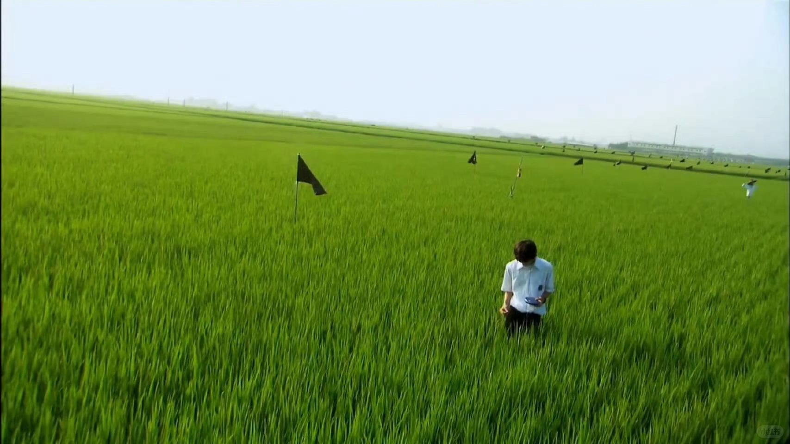
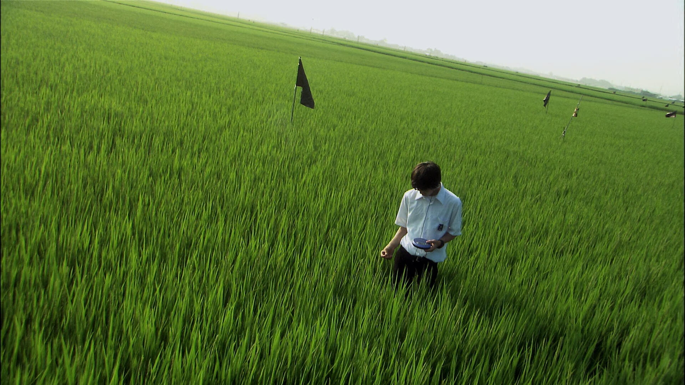
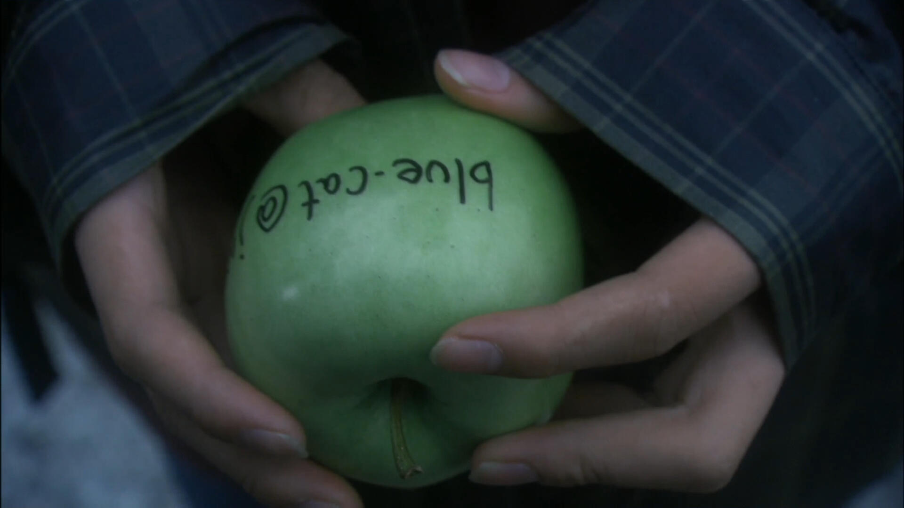
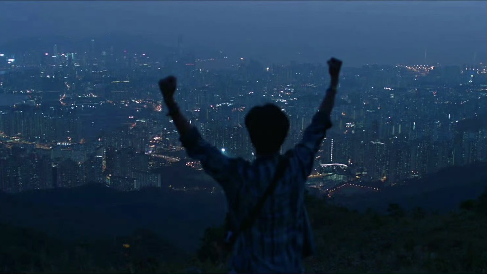
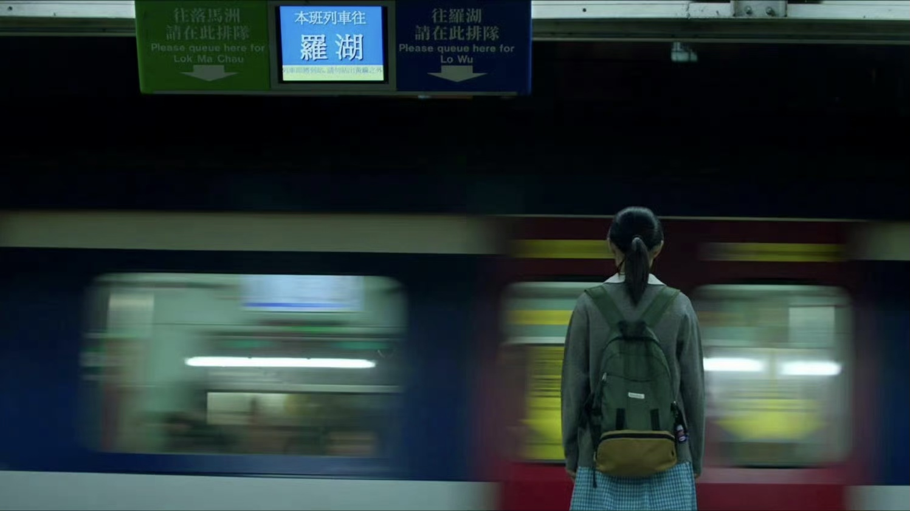

01 / CINEMA & IMAGINATION // CLICK TO SHUFFLE



FILM // 01
关于莉莉周的一切
“我在这里。借着以太的力量，我就在青翠的麦田里，聆听那些残酷的青春细语。”
⚡ Hover to Spread / Click to Next



FILM // 02
过春天
“香港的雨，深圳的太阳。十六岁的少女身上绑着微弱的轰鸣，那是我义无反顾游过去的一场春天。”
⚡ Hover to Spread / Click to Next